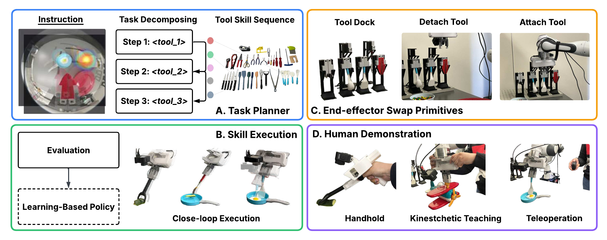

Robotic manipulation dexterity is typically pursued through high-DoF multifingered hands with substantial complexity. While many robotic hands aim to replicate human hands, the functional role of human hands suggests that much of this complexity is to support tool using and making. This observation motivates Any-ttach: we leverage the flexibility of mechanical systems and directly employ end-effector swapping as a central mechanism for dexterity.
Any-ttach consists of (1) a low-cost, automatic, and easily deployable end-effector swapping mechanism that interfaces with a 1-DoF parallel gripper, (2) a handheld device for collecting human demonstration data, and (3) a task planning framework that integrates learned, parameterized, and planned skills to enable flexible use of diverse everyday tools.
In experiments, we evaluate the effectiveness of the swapping mechanism and show that this kinematically constrained coupling provides unique advantages in robust skill demonstration and tool-changing efficiency. The system demonstrates broad compatibility across different skills with different end-effectors, spanning regular everyday tools, articulated tools, and a low-cost anthropomorphic hand. We verify the system on two long-horizon tasks, making sandwich and preparing cucumber, with 6 sub-skills, demonstrating that hierarchical tool-skill decomposition improves complex task reliability.
We hope Any-ttach offers an alternative path to manipulation dexterity with simplicity --- dexterity can emerge from composing skills across end-effectors and exploiting contact interactions within each skill. In this view, even a simple 1-DoF gripper can achieve greater manipulation dexterity.
Any-ttach is structured as a three-stage pipeline: (1) a task planner maps language instructions to an ordered sequence of tool-skill pairs, (2) each skill is executed in closed loop using learned or planning-based modules, and (3) verifiers check tool attachment and task completion to enable automatic retry.

We evaluate Any-ttach on two representative long-horizon tasks:
@inproceedings{anyttach2026,
title = {Any-ttach: Quick End-effector Swapping Enables Manipulation Dexterity with Simplicity},
author = {Anonymous Submission},
booktitle = {Conference Submission},
year = {2026}
}